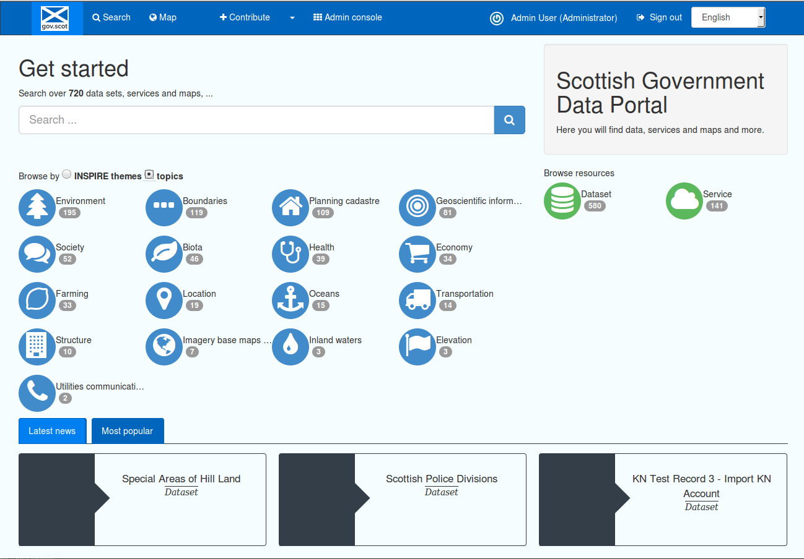
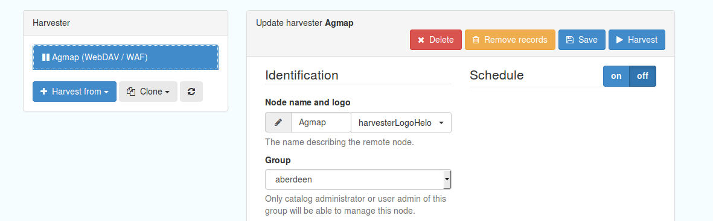
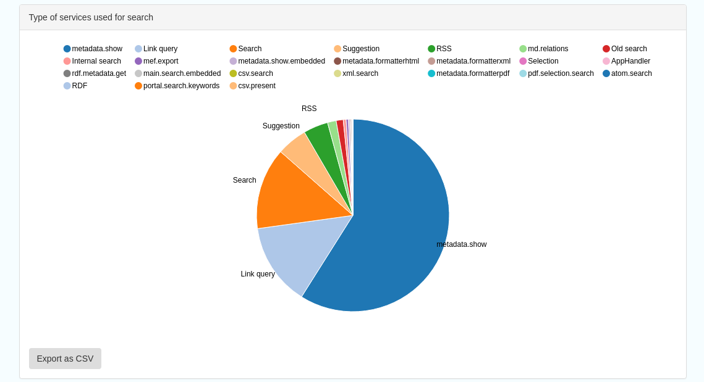
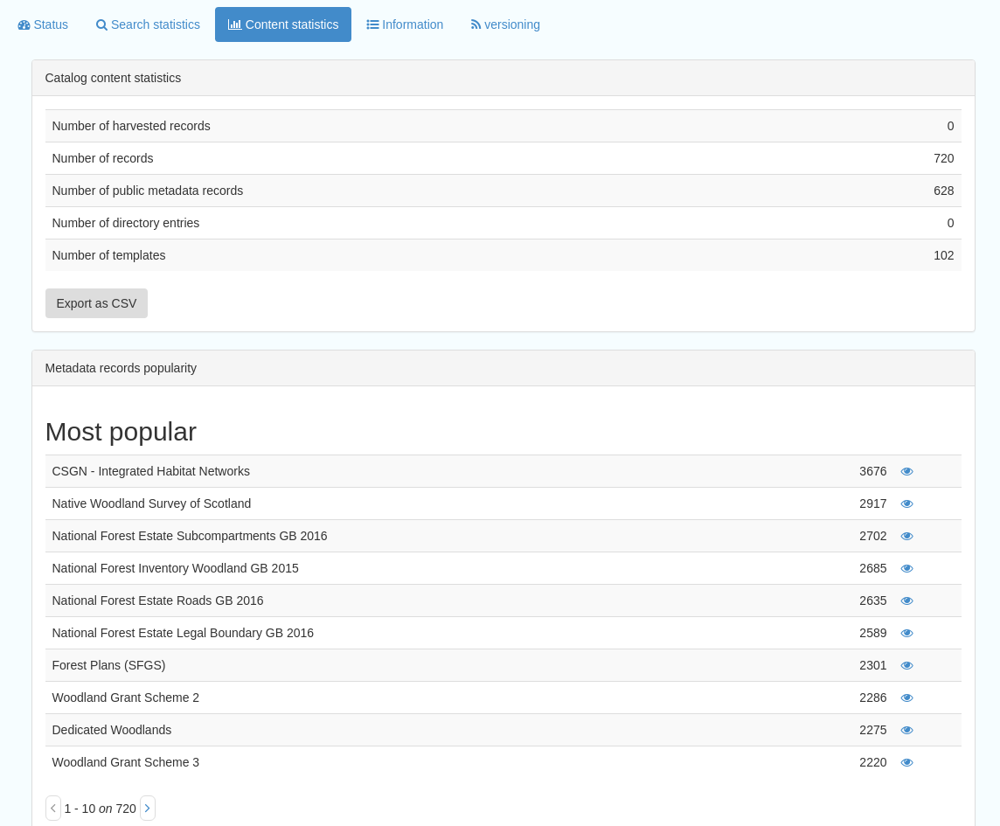

Introduction¶
Overview¶
This documentation is intended to provide guidance to administrators of the SSDI Catalogue. It assumes familiarity with the user guidance, particularly around the creation and validation of metadata.
The administrative functionality within the catalogue is accessed via the Admin console, on the top menu when you log in with an administrator profile.

Figure 1.1.1: SSDI catalogue main page, showing admin console link

Figure 1.1.2: SSDI catalogue admin console, for a full administrator
The level of functionality available in the admin console is dependent on the privileges of the logged in user. The above image shows the admin console for a full Administrator. This page also provides a quick “at a glance” view of the number of records available, and the numbers of datasets and services.
Metadata and Templates¶
The Metadata and Templates button provides access to four subsections, as shown in the image below:

Figure 2.1.1: Metadata and Templates subsections
Metadata and Templates Standards available¶
This shows the metadata standards or profiles loaded onto the system. Selecting one or more of the standards activates the options to Load templates and Load samples for the selected standards.
Note that the templates have been already loaded for iso19139.gemini22
Formatter¶
Advanced
This allows advanced administrators/system maintainers to customise how metadata is displayed within Geonetwork. For further information on this topic see the Geonetwork help documentation at http://geonetwork-opensource.org/manuals/trunk/eng/users/customizing-application/creating-custom-view.html?highlight=formatter
Schematron¶
Advanced
This section allows advanced administrators/system maintainers to see which schematron rules are in place for specific schemas and to edit them as required. It is not recommended that changes are made in this section as it will impact on how records are validated.
Metadata Identifier Templates¶
Advanced
This section allows the customisation of the identifier generated by Geonetwork when a record is created or imported. The default is a randon UUID string, but identifier templates would allow a pre-configured format with a template for rendering any user-generated elements. For example:
- scot.gov::{IDCODE} would render the IDCODE as an element to be completed during metadata creation
- scot.gov::{SLA}:{ID} would render both SLA and ID as elements to be completed during metadata creation
Harvesting¶
Harvesting allows you to consume metadata from external services on a scheduled basis. The harvester section has two subsections, as shown in the image below. It also shows any existing harvester nodes set up on the system, and their current status (running or paused).

Figure 3.1.1: Harvesting Section
Harvester Settings¶
From this section you can see the list of available harvesting nodes, and clone an existing node or add a new one.
To add a new harvester node, either clone an existing one by selecting it from the dropdown Clone list in the above image, or click the “Harvest from” button to access the dropdown list of harvester types. The configuration options available will depend on the type of node selected.


Figures 3.2.1/2: Common harvester node configuration options
Common configuration options are:
Node name and logo: a unique name and optional logo for this harvesting node
Group: The group that the harvester should belong to
Schedule: Should the harvester run repeatedly to a schedule or just run the once
Delete: delete this harvester node and all related records
Remove records: delete records but leave harvester in place
Save: save changes to harvester configuration
Harvest: run this harvest
Category: set the category that the harvested records should be added to
- Validate records before import: Reject invalid records before importing them into the catalogue. This has the following options:
- Accept all metadata without validation (this option will import all records regardless of validity)
- Accept metadata that are XSD valid (this option will cause the harvest to fail on the first invalid record)
- Accept metadata that are XSD and Schematron valid (this option will cause the harvest to fail on the first invalid record)
Below the configuration options is a report on the harvester history if available, and the number of records harvested in the last harvest. Note that if the configuration changes at all these will be reset.
For information on the configuration options for the different harvester node types, see the Geonetwork documentation at http://geonetwork-opensource.org/manuals/trunk/eng/users/user-guide/harvesting/index.html
Harvester Reports¶
This section allows you to see the harvester history for all nodes and export the results as a CSV file.

Figure 3.3.1: Exporting harvest history as a CSV
Statistics and Status¶
This section provides a range of metrics and information on the health of the Geonetwork installation and the activity on it. It is split into five subsections.
Status¶
This subsection should be the first port of call if there are any problems with the Catalogue. If the catalogue is under a low load and is performing optimally then the status page should look like the one below:

Figure 4.1.1: Status page showing catalogue performing optimally
Report any errors shown here to Astun Technology.
The metrics links provide advanced information on the status of the system and should not generally be needed. The Activity “Export (zip)” provides a log file from the server. This may be requested by Astun Technology support staff. This download could be large and may take some time. The Thread Status link provides advanced information on the java installation, and should not generally be needed.
Search Statistics¶
This is an extensive subsection showing the following, all additionally available for export as CSV:
Search statistics, such as the number of catalogue views by day or month
Statistics for the CSW endpoint
Number of searches by timeperiod and type, shown as a graph
Types of services for which a search is triggered, such as export to MEF, RDF, keyword search in portal, shown as a Pie Chart
IP address for each search
- Search fields and terms
- This allows the choice of the type of search, which then displays the criteria used and the number of searches
- Clicking on a criteria shows the breakdown of number of searches per term for that criteria
- For example, to see a breakdown of search keywords, choose “Search” from the dropdown box and then click the “Keyword” link in the list below (see Figure 4.2.3)



Figures 4.2.1/2/3: Various elements of the search statistics interface
Content Statistics¶
This subsection provides more information on content searches. The following options are available, for export as CSV:
Catalog content statistics, such as the number of harvested records, total number of records, number of public records and so on
Metadata records popularity, showing the most popular records searched for (clicking the blue eye icon to the right of a record will take you to it)
Best Rated, showing the most highly rated records (if local star ratings are being used)
- Record statistics, this is a dropdown list with a number of available metrics, for example (but not limited to):
- Year
- Format
- INSPIRE theme(s)
- Contact for the resource

Figure 4.3.1: Catalog content statistics and Most popular records
- A number of pie charts, showing the following metrics, where hovering over a slice will provide the actual number of records:
- Category
- Owner
- Workflow Status
- Validation Status

Figure 4.3.2: Record statistics by Year
Note that there is a current known issue with the pie chart breakdowns for records by category and so on as these all currently show the same information. This is being investigated
Information¶
This subsection provides information on the Geonetwork installation on the server. This section is for advanced administrator/system maintainer use.
It comprises the following sections:
- Catalog information- where the files and folders are located on the server
- Database- the connection status and connection string for connecting to the database
- System information- the version of java in use and the amount of memory being consumed
- Index- information about the configuration of the search index
Versioning¶
If metadata versioning is enabled on the server, which it is not, by default, then this section provides information about this process. This section is for advanced administrator/system maintainer use only.
Reports¶
This section contains various downloadable reports on user activity in the catalogue. Each provide the option to choose a date range, and the option to filter by group. The resulting reports are available for download as a CSV. The following reports are available:
- Updated metadata- can be used to find records that have been, or not been, updated within a specific timeframe
- Internal metadata- can be used to find records that are only available within their group
- Metadata file uploads- shows records for which data has been attached (not used within SSDI)
- Metadata file downloads- shows records for which data has been downloaded (not used within SSDI)
- Users access- shows user names, emails and last login dates

Figure 5.1.1: The reporting section
Classification Systems¶
This section provides access to the Thesauri and other directories used within the catalogue. It is split into three subsections.
Thesaurus¶
Thesauri in rdf (skos) format can be managed or added here. It is also possible to interrogate the existing thesauri loaded into the catalogue.

Figure 6.1.1: The thesaurus subsection showing the customised Scottish Regions thesaurus
Selecting a thesaurus from the list provides further information about it. The settings here should not be changed as they will affect the working of the catalogue.
It is possible to add additional thesauri by clicking the “Add thesaurus” link. The options are as follows:
- New thesaurus- build one from scratch in Geonetwork
- From local file- upload a thesaurus in rdf (skos) format from your local hard drive
- From URL- provide a link to a compatible thesaurus online
Directories¶
TODO